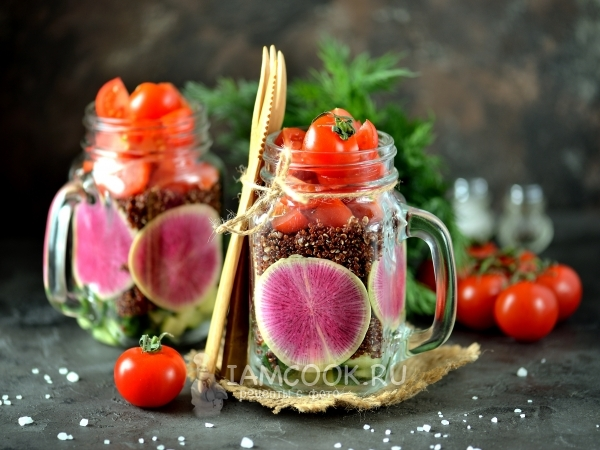
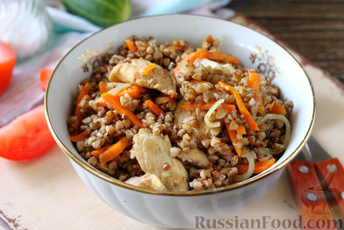
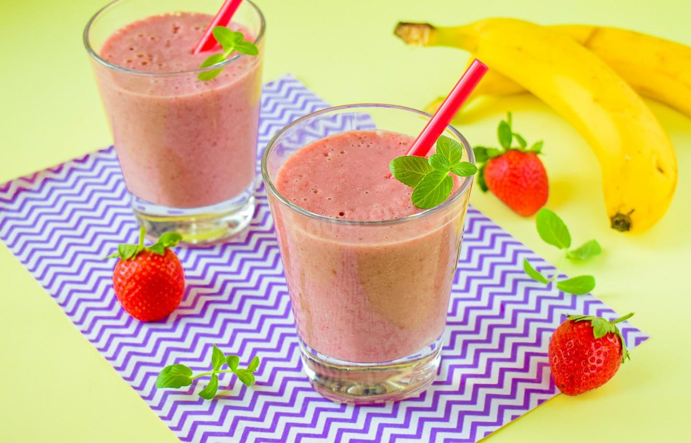
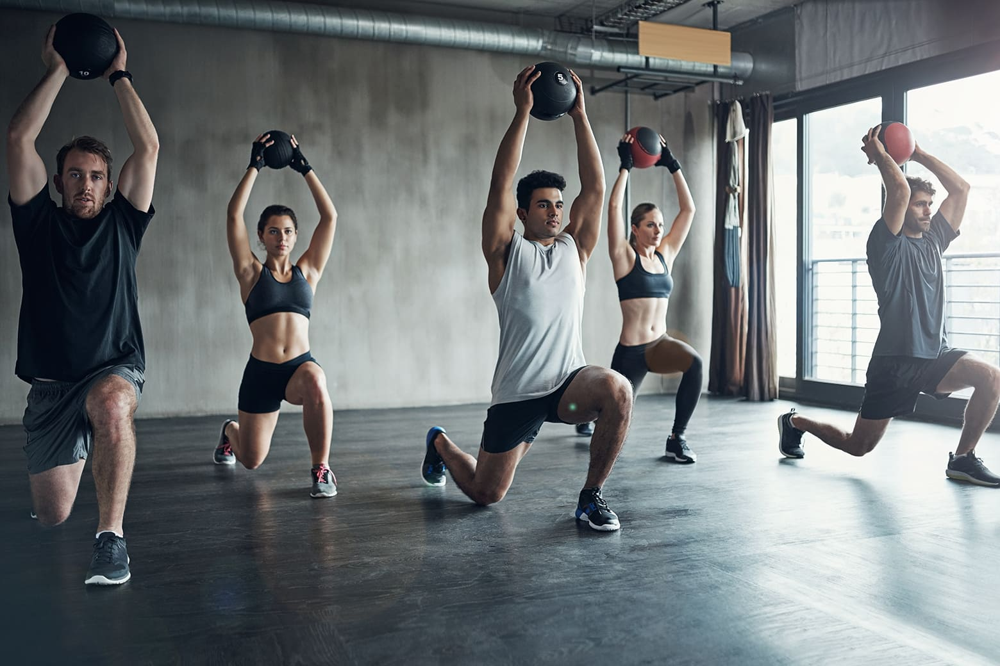
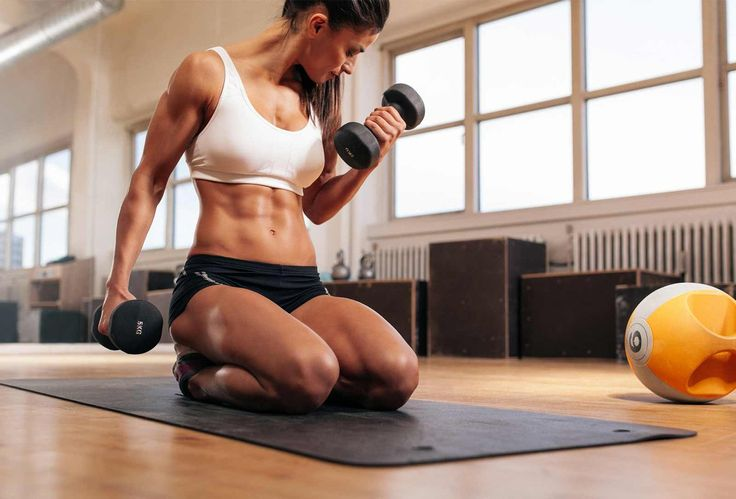
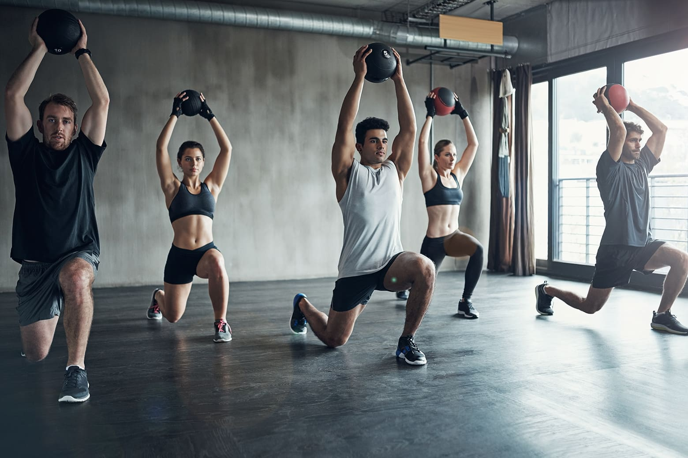
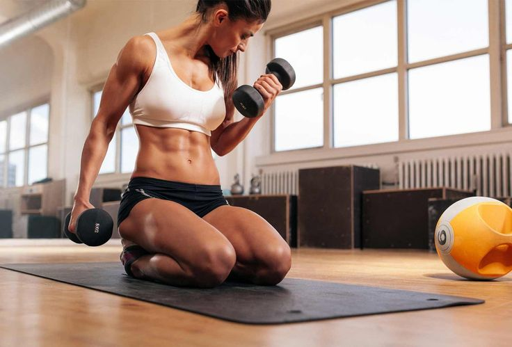
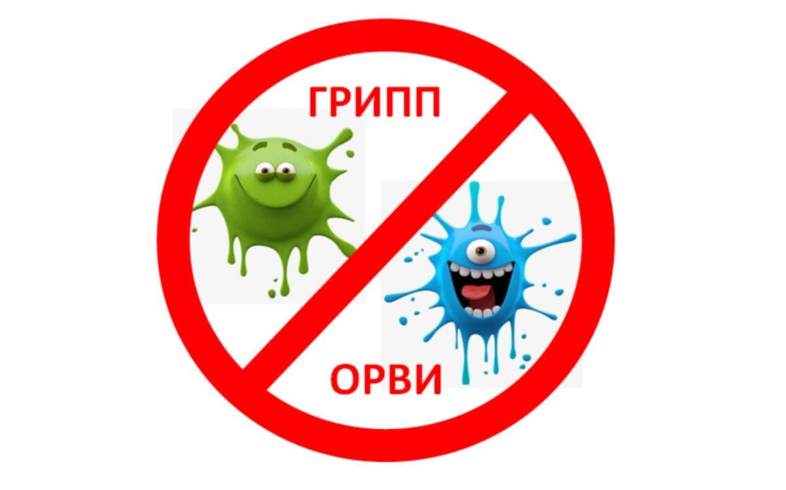
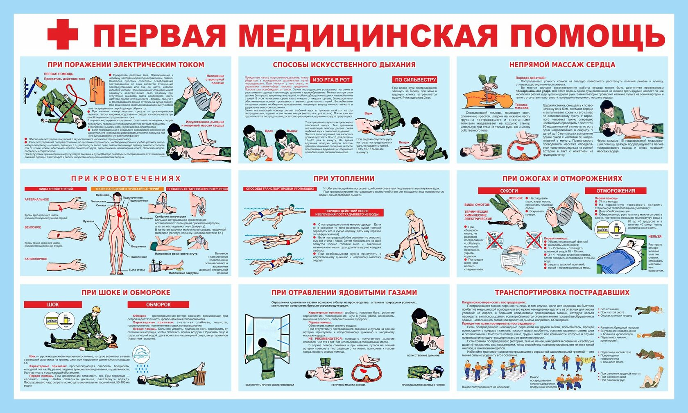
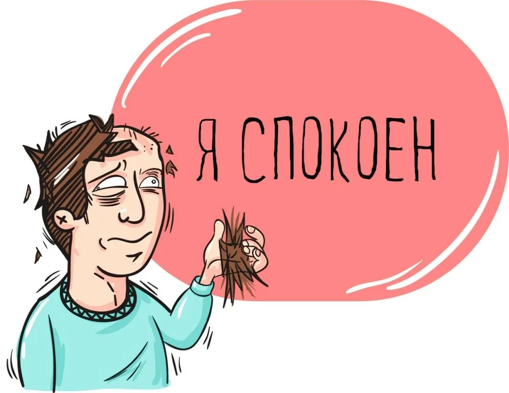

Рекомендации по здоровому питанию
Здоровое питание — ключ к хорошему самочувствию. Вот несколько рекомендаций:
- Баланс макро- и микроэлементов: Включайте в рацион разнообразные продукты, чтобы получать все необходимые витамины и минералы.
- Фрукты и овощи: Ешьте не менее пяти порций фруктов и овощей в день для улучшения обмена веществ и укрепления иммунной системы.
- Гидратация: Пейте достаточно воды в течение дня для поддержания гидратации организма.
Популярные рецепты:
  Планы тренировок и советы по фитнесу
Регулярные тренировки помогают поддерживать физическую форму и укреплять здоровье. Вот несколько советов:
- Планирование тренировок: Создайте график тренировок, включая кардио, силовые упражнения и растяжку.
- Цели и мотивация: Установите конкретные цели и отслеживайте свой прогресс для поддержания мотивации.
- Разнообразие: Меняйте типы тренировок, чтобы избежать скуки и тренировать разные группы мышц.
Программы тренировок:
- План тренировок для начинающих
- Программа для увеличения мышечной массы
- Тренировки для улучшения выносливости
 



Медицинская информация и самопомощь
Заботьтесь о своём здоровье и получайте необходимую информацию для поддержания хорошего самочувствия:
- Профилактика заболеваний: Регулярные медицинские осмотры и прививки помогают предотвратить многие болезни.
- Самопомощь при распространённых недомоганиях: Узнайте, как правильно обращаться с такими симптомами, как головная боль или простуда.
- Психологическое здоровье: Не забывайте про психическое здоровье. Управление стрессом и поддержка психологического благополучия также важны.
Полезные статьи:
  Факторы здоровья
| Сфера влияния факторов | Процент влияния | Факторы, укрепляющие здоровье | Факторы, ухудшающиe здоровье |
|---|---|---|---|
| Генетические | 15-20% | Здоровая наследственность.Отсутствие предрасположенности к заболеваниям. | Наследственные заболевания нарушения ипредрасположенность к ним. |
| Состояние окружающей среды | 20-25% | Хорошие бытовые и производственные условия,экологически благоприятная среда обитания. | Вредные условия быта и производства, нарушение экологической обстановки |
| Уровень развития медицины и здравоохранения | 10-15% | Медицинский скрининг,высокий уровень профилактических мероприятий,своевременная и полноценная медицинская помощь. | Отсутствие постоянного контроля за динамикой здоровья; низкий уровень первичной профилактики;некачественное медицинское обслуживание. |
| Условия и образ жизни | 50-55% | Рациональная организация жизнедеятельности | Отсутствие рационального режима жизнедеятельности |